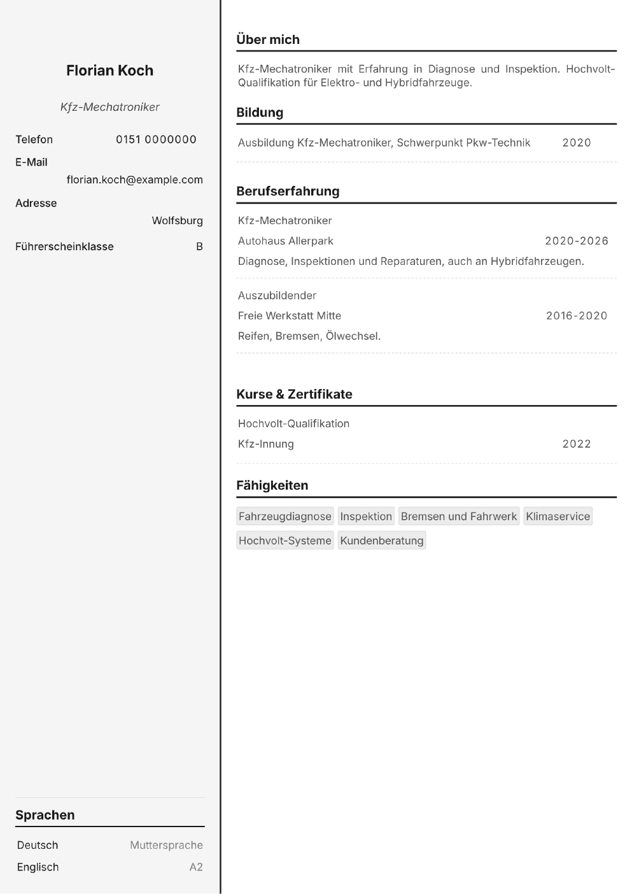

Lebenslauf Kfz-Mechatroniker/in: Muster und Tipps
Erstellen Sie so einen Lebenslauf mit MobilCV: kostenlos, ohne Anmeldung, direkt am Handy.
Lebenslauf erstellenWerkstätten wollen im Lebenslauf sehen, mit welchen Fahrzeugen und Marken Sie gearbeitet haben, wie sicher Sie in der Diagnose sind und welche Qualifikationen Sie besitzen.
Marken und Fahrzeugarten
Nennen Sie die Marken oder Fahrzeugarten (Pkw, Nutzfahrzeuge), mit denen Sie Erfahrung haben. Für Markenwerkstätten ist das besonders wichtig.
Diagnose und Arbeiten
Inspektion, Fehlerdiagnose mit Diagnosegerät, Bremsen, Klima, Reifen: Schreiben Sie, was Sie selbstständig erledigen.
Qualifikationen nennen
Eine Hochvolt-Qualifikation für Elektro- und Hybridfahrzeuge, ein Klimaschein oder Herstellerschulungen sind gefragt. Geben Sie das Jahr an.
Das gehört in Ihren Lebenslauf
- Ausbildung mit Schwerpunkt und Jahr
- Marken und Fahrzeugarten
- Diagnose und typische Arbeiten
- Qualifikationen (Hochvolt, Klima)
Beispielformulierungen für Ihre Erfahrung
Beschreiben Sie Ihre Erfahrung konkret, so wie in diesen Beispielen:
- Beispiel: „Fehlerdiagnose mit herstellerspezifischem Diagnosegerät“
- Beispiel: „Inspektionen und Reparaturen an Pkw verschiedener Marken“
Kenntnisse für den Lebenslauf
Häufige Fehler
- Keine Marken oder Fahrzeugarten nennen.
- Qualifikationen ohne Jahr angeben.
- Nur „Reparaturen“ schreiben.
Muster eines ausgefüllten Lebenslaufs
Dies ist ein echtes PDF, erstellt mit MobilCV. Namen und Firmen sind erfunden. Ein Foto ist im Lebenslauf keine Pflicht. Ihre Lebenslaufdaten werden nicht an unseren Server gesendet, sondern nur in diesem Browser gespeichert.

Erstellen Sie jetzt Ihren Lebenslauf
Lebenslauf mit MobilCV erstellen